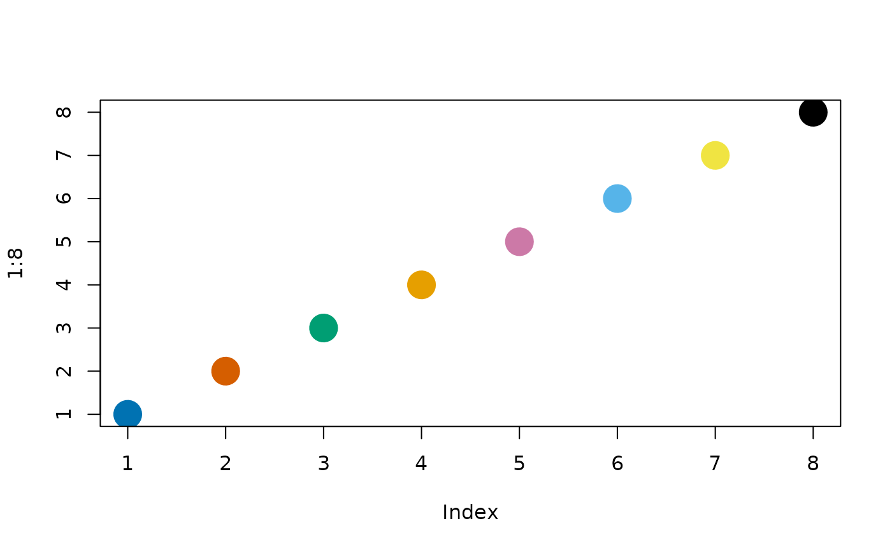

Every plot in the package draws with base graphics and one small set of
style choices, which these functions expose. blpal() returns
colour-blind-safe palettes: "okabe" (the Okabe-Ito categorical set),
"diverging" (blue, grey, orange-red), "sequential" (light to dark
blue) and "grey". plotopt() sets, for the session, the defaults every
plot uses: palette, grid, cex, las, bg and panel. Each plot
also takes main, col (which overrides the palette), pal and ...
(passed to the base-graphics call), so one plot can change without
changing the session.
Value
blpal(): a character vector of colours. plotopt(): the named
list of the six options in force, invisibly when setting.
yoypals(): the names of the change-table palettes.
Details
Colour never carries meaning alone: series that differ in colour differ in line type or point shape too, so a plot reads the same in grey print.
"okabe" is the eight-colour set of Okabe and Ito (2008),
distinguishable under the common forms of colour-vision deficiency.
"diverging" has three anchors (blue #2166AC, grey #8C8C8C,
orange-red #D6604D) and is used for changes and residuals;
"sequential" has five blues from light to dark, and "grey" five
greys from dark to light. With n given, "okabe" and "grey" repeat
their colours and "diverging" and "sequential" are interpolated.
The session options are kept in options(crimlab.plot); the defaults
are palette = "okabe", grid = TRUE, cex = 1, las = 1,
bg = "white" and panel = "#EEF1F6" (the fill of the plot region
behind white grid lines; NA for none). Setting some options keeps the
others; an unusable value set by hand with options() falls back to its
default.
yoypals() lists the palettes of the year-over-year change
tables: "diverging" (orange-red for a rise judged bad, teal for one
judged good), "safe" (orange and blue, safe for red-green colour
blindness) and "mono" (black and grey).
References
Okabe, M. and Ito, K. (2008). Color Universal Design (CUD): how to make figures and presentations that are friendly to colorblind people. https://jfly.uni-koeln.de/color/
Examples
blpal("okabe", 3)
#> [1] "#0072B2" "#D55E00" "#009E73"
old <- plotopt()
plotopt(palette = "grey", grid = FALSE)
plotopt(palette = old$palette, grid = old$grid)
plot(1:8, pch = 19, cex = 3, col = blpal())
